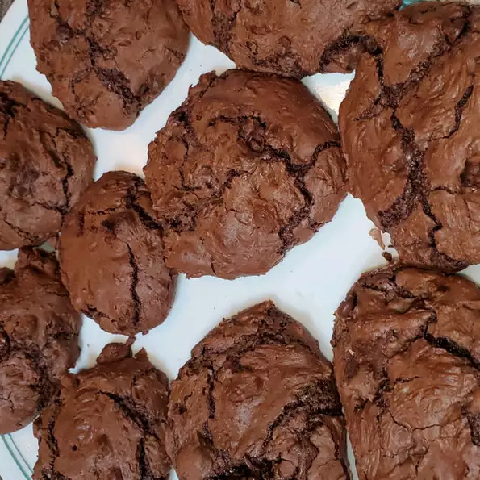

Brownie Recipe

Delicious, soft, and chewy brownie cookies that are quick and simple!
We all know that homemade brownies are exceptionally rich. And when it comes to brownie cookies, these are the richest. They're extra chewy with soft fudge-like centers.
Ingredients:
- Brownie mix (1 Packet)
- All Purpose Flour (1/4 Cup)
- Vegetable Oil (1/4 Cup)
- Water (3 tbsp)
- Eggs (2)
- Semisweet chocolate chips (1 Cup)
Steps:
- Preheat oven to 350 degrees F (175 degrees C). Lightly grease a baking sheet.
- Combine brownie mix, flour, oil, water, eggs, and chocolate chips in a large bowl. Drop spoonfuls of dough 2 inches apart onto prepared baking sheet.
- Bake in preheated oven until cookies are just set (about 9 minutes). Let cool on baking sheets for 2 minutes before removing to a wire rack to cool completely.